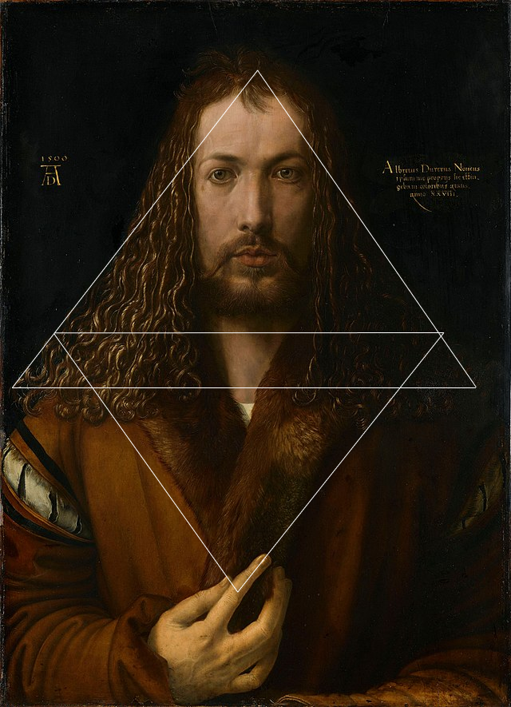

L’article choisi est intitulé Christology of Nicholas de Cues and Christological Iconography in Self-Portraits of Albrecht Dürer et il est issu de la revue “IKON Journal of Iconographic Studies”. Cet article constitue une source intéressante car il a été rédigé par un professeur universitaire nommé Martin Germ, spécialisé dans les arts et l’histoire de l’art à l’université de Ljubljana en Slovénie. L’auteur est donc identifiable, et il cite ses sources en fin d’article, ce qui en fait un article légitime académiquement pour notre analyse. On peut retrouver l’article complet sur le site ResearchGate par exemple.
Cet article traite donc de la théologie christique de Nicholas de Cusa ainsi que l’iconographie christologie dans les autoportraits d’Albrecht Dürer.
L’auteur détaille les raisons pour lesquelles le peintre prend les traits du Christ dans ses autoportraits. Il parle entre autres d’une certaine empathie d’Albrecht Dürer pour le Christ et sa Passion, mais aussi de l’aspect de Christomimesis. L’article avance aussi l’influence de la théologie de Nicholas de Cues sur l’œuvre d’Albrecht Dürer. Nicholas de Cues est un théologien, cardinal, philosophe allemand du XVe siècle. Sa pensée avance que le savoir de l’Homme sur l’univers et Dieu est incomplet. Il est un exemple de l’homme de la Renaissance, car il est versé dans plusieurs disciplines et conscient de son ignorance.

Autoportrait en manteau de fourrure, 1500
Tous les exemples cités au cours de l’article sont étayés d’images de peintures ou de dessins préparatoires de l’artiste, afin que le lecteur puisse visualiser ce dont parle l’auteur. Cependant, comme le dit l’article, il n’y a aucune preuve historique que le peintre ait été vraiment influencé par l’idéologie de Nicholas de Cues. Toutefois, ses idées sont très répandues en Europe, donc l’hypothèse n’est pas à écarter, car des écrits de Cues ont été acclamés par les humanistes lors de leur publication en Allemagne.
Germ, Martin. « Christology of Nicholas of Cusa and Christological Iconography in Self-Portraits of Albrecht Dürer ». IKON, vol. 1, janvier 2008, p. 179‑98. DOI.org (Crossref), https://doi.org/10.1484/J.IKON.3.15.
Cette source est une vidéo publiée le 18 mai 2020 par Jean Philippe Mercé sous le pseudonyme « des histoires d’art 64 » sur la plateforme YouTube. Cette vidéo de 12 minutes est une présentation et un commentaire d’une œuvre d'Albrecht Dürer « autoportrait au manteau de fourrure » dans laquelle l’auteur présente l’artiste et plusieurs de ses autres œuvres, les replaçant dans leur contexte.

Autoportrait en manteau de fourrure, 1500
Albrecht Dürer est présenté comme un artiste important de la Renaissance nordique du XVe au XVIe siècles. L’auteur réalise une description précise de l’œuvre et de sa construction symétrique qui est basée sur des triangles. Il continue sa présentation par une interprétation de l’œuvre en la replaçant dans la production artistique de l’artiste, comprenant un grand nombre de portraits et d’autoportraits. Il met en avant les « Autoportraits signatures » retrouvés dans plusieurs œuvres de Dürer. Cette œuvre montre une rupture dans la tradition du portrait en position ¾ habituellement utilisée dans ses autoportraits. L’utilisation de cette pose de face dans un autoportrait est presque inédite car à l’origine réservée aux images du Christ. Les triangles de la composition et l’usage du trois rappelle la trinité, ainsi que la main droite qui rappelle le geste de bénédiction du Christ. L’auteur présente la mise en avant de la signature de l’artiste, doublée d’un monogramme sur le même axe. Jean-Philippe Mercé conclut sa présentation en donnant son avis personnel, ainsi que des hypothèses de comparaison du peintre avec le Christ, mis au même niveau par leur capacité de création.
Le créateur de cette source vidéo est identifié dans le titre de la vidéo et dans la description de sa page YouTube, il est conseiller pédagogique départemental des arts plastiques. Les vidéos de sa chaîne YouTube sont réalisées de manière amateur, le contenu partagé est stabilisé. Cette source ne présente pas de légitimité académique par son caractère amateur mais permet de répondre à un besoin d’information. Cette source est évaluée positivement par les internautes interagissant avec dans les commentaires.
Mercé, Jean-Philippe, HISTOIRE(S) D'ART #17 : Regardez-moi ! (Albrecht DÜRER) - [jphilippe mercé][Vidéo]. YouTube. https://youtu.be/AAtUMnB0cSw?si=AA4kvUmK7J1V4sh8
Albrecht Dürer a lui même de son vivant écrit des livres lui permettant de consigner ses études sur le corps humain. Ici, une traduction proposée par Louis Meigret datant du XVIe siècle intitulée Les quatres livres d'Albert Dürer, peinctre et géometrien très excellent, de la proportion des parties & pourtraicts des corps humain permet de mieux comprendre la place des mathématiques dans l’art de Dürer.
Le peintre y décrit comment s’y prendre afin de pouvoir représenter la figure humaine grâce à la géométrie et aux mathématiques. Cela s’accompagne de dessins de la main de l’artiste afin d’illustrer ses propos. Il le fait de manière méthodique en séparant de part et d’autre le corps féminin et masculin mais aussi selon les âges. Chaque illustration faite par Dürer est accompagnée d’une liste de toutes les parties du corps, leurs mesures ainsi que la manière dont celles-ci interagissent avec les autres. On se rend alors compte que pour le peintre la géométrie et les mathématiques sont primordiales pour dessiner.
Ce document vient d’une source professionnelle car il provient directement de l’artiste, bien qu’il nous soit accessible par la traduction qui reste contemporaine de Dürer. Le document est donc tout à fait pertinent pour notre recherche car il correspond à notre recherche et que la source est des plus fiables qu’il soit.
Dürer, Albrecht (1528) – Les quatres livres d'Albert Dürer, peinctre et géometrien très excellent, de la proportion des parties & pourtraicts des corps humain
L’article de Karen Doyle Watson intitulé Albrecht Dürer's Renaissance Connections between Mathematics and Art tiré de la revue "The Mathematics Teacher" permet de comprendre comment Dürer en est venu à utiliser la géométrie dans ses oeuvres.
L’autrice y décrit le contexte historique à l’époque de Dürer ainsi que ses voyages en Italie qui lui ont permis d’y apprendre la géométrie et les mathématiques. L’article de quelques pages s’accompagne d’illustrations provenant des livres rédigés par Dürer pour étayer ses propos. Le peintre utilise donc la géométrie euclidienne afin de représenter des formes en volumes sur une surface plate. Aussi, elle y décrit comment Dürer a participé à la recherche scientifique en créant des instruments géométriques pour créer des ellipses mais aussi comment ses traités scientifiques ont contribué au développement du Haut-Allemand. Donc, outre son importance dans le monde artistique et mathématique, Albrecht Dürer a aussi influencé la langue allemande encore parlée aujourd’hui.
Cette source est également pertinente pour le traitement de notre sujet car elle est écrite par une professionnelle. En effet, Karen Doyle Watson est doyenne, vice présidente des Affaires Académiques et professeure de mathématiques à l’université DeSales. Elle a également étudié à Harvard et à la Sorbonne. Son article fourni également des sources bibliographiques sur lesquelles elle s’est appuyé afin de l’écrire ce qui rend son article tout à fait légitime. En fin de compte, l’article traite peu de l’aspect artistique de l’oeuvre du peintre mais se concentre quasi uniquement sur ses contributions pour le monde des mathématiques. Cela est logique compte tenu de la spécialisation de l’autrice. Toutefois, l’article reste pertinent au vu de l’importance de cette discipline pour l’artiste.
Walton, Karen Doyle (Avril 1994) – Albrecht Dürer’s Renaissance Connections between Mathematics and Art
Le site web sur lequel l’article se trouve est nommé Encyclopædia Universalis. C’est un site scientifique où sont publiés seulement des textes légitimes, rédigés par des spécialistes dans des domaines différents. L’auteur de cet article est Pierre Vaisse qui est un professeur d’histoire de l’art à l’université de Genève. Plusieurs de ses articles concernant l’art en Allemagne en XVIe, XVIIe et XVIIIe sont disponibles sur Encyclopædia Universalis, on remarque donc qu’il est bel et bien spécialisé dans l’art des graveurs allemands, et de la renaissance dite nordique. Avant la publication de l’article sur Encyclopædia Universalis en 1964 Vaisse traduit les Lettres et écrit théoriques ainsi que le Traité des proportions d’Albrecht Dürer publiés chez Hermann dans la collection « Miroirs de l'art ».
L’article constitue une autre source concernant le sujet d’Albrecht Dürer présente des études récentes et fait état des questions en proposant une synthèse des recherches contemporaines sur l'artiste.
L’article observe d’une manière chrono-thématique la vie, l'œuvre et la pensée d’Albrecht Dürer ainsi que ses théories artistiques en accentuant sur son rôle majeur dans la Renaissance allemande et son évolution stylistique influencée par la Renaissance italienne. Sa démarche inclut la progression chronologique et explore le sujet en approfondissant sur la production artistique et la pensée de Dürer.
La structure est en deux parties comme l’auteur commence par la section « L’artiste et son temps » où il indique le contexte historique et culturel du travail de l’artiste, en montrant le rôle important de Dürer dans la transition entre le Moyen Âge et la Renaissance, ainsi que la conscience de l’artiste de sa valeur dans les milieux artistiques à l’époque. La deuxième section intitulée «À la conquête d'un style», Vaisse se concentre sur le développement du style et des influences, surtout italiennes dans sa production artistique. Nous poursuivons également la façon dont il crée son style personnel en fusionnant les traditions nordiques et les nouveautés de la Renaissance.
Au sein de l’article nous observons principalement des reproductions d'œuvres d’Albrecht Dürer, par exemple des gravures, des dessins et également des peintures. Ce qui nous intéresse plus précisément, c’est notamment L’Autoportrait à la fourrure, réalisé en 1500. Selon Stéphanie Cabanne, cet autoportrait serait un de ses premiers à le représenter de cette manière et cette représentation de lui-même présente la pratique du péché originel suite au besoin de regarder son reflet dans un miroir tel Narcisse. Pour effectuer cette peinture, Albrecht Dürer s’est représenté de face alors que c’est habituellement réservé au Christ. La présence d'une représentation humaine fidèle à la réalité est d’ailleurs aussi interdite par la Bible. L'œuvre associe ainsi deux penchants : l’art de la Renaissance et surtout le mouvement humaniste en Italie, témoignant de l’influence italienne associée à l’art nordique récemment adoptée suite aux voyages de l’artiste en Italie.
Pour conclure, l’article a servi énormément dans le cadre de la réalisation du site en donnant des renseignements essentiels sur la production et l’évolution artistique de l’artiste, ainsi que les indices de la création des premiers portraits et autoportraits de la Renaissance nordique. Les deux parties de l’article ont beaucoup aidé pour structurer et établir le thème et de voir les différents aspects de l'œuvre de Dürer.
Vaisse, Pierre (1999) – Albrecht Dürer (1471-1528)
Le site sur lequel est publié l’article est Wikipédia, qui est une encyclopédie collaborative, libre de droits et en ligne, lancée en 2001, elle est de nos jours une des plus grandes sources rapide d’informations sur Internet. L’aspect collaboratif veut dire que chaque personne peut créer ou modifier des articles. Wikipédia est aussi un site multilingue, et existe en plusieurs langues, dont le français, l’anglais, l’espagnol, l’italien et le bulgare etc. Le site est géré par une organisation à but non lucratif appelée la Wikimédia Foundation.
Cet article est consacré à Albrecht Dürer, il propose un parcours détaillé de l'œuvre, de la vie et de l’influence de l’artiste au sein de la Renaissance allemande. La structure est encyclopédique et est donc divisée en différentes sections.
En commençant avec sa biographie, parlant de la formation de l’artiste à Nuremberg sa ville natale et ses voyages en Italie, qui ont beaucoup influencé sa production artistique. L’article contient aussi l’établissement de son atelier ainsi que son évolution artistique et les relations avec d’autres artistes mais aussi les intellectuels de l’époque.
Ensuite l’article propose aussi une analyse de ses œuvres, notamment ses gravures, aquarelles et peintures, ainsi que les techniques utilisées. Les sujets prédominants sur lesquels l’article se concentre surtout sont l’utilisation de la perspective et des proportions, une approche innovante à l’époque. Le texte raconte aussi le rôle de théoricien de l’artiste. Albrecht Dürer écrit beaucoup sur la géométrie, les proportions humaines et la perspective, il est responsable de la diffusion des connaissances mathématiques au sein de l’art nordique. Par exemple, son travail intitulé Le traité des proportions du corps humain, publié après sa mort en 1528, compile ses connaissances de l’anatomie humaine où il parle notamment de la géométrie qui doit s’appliquer dans les œuvres.

Le Lièvre, 1502, Albertina, Vienne.

Albrecht Dürer, Grande Touffe d'herbes, 1503, 41 × 31,5 cm, dessin, Graphische Sammlung Albertina, Vienne
Le texte raconte aussi de l’héritage que Albrecht Dürer a laissé aux générations suivantes en Allemagne et à l’étranger et la perception de son image au fil des temps. L’article présente également de nombreuses images illustrant les différents aspects des œuvres de Dürer. Comme Le Lièvre ou La Grande Touffe d'herbes, qui donnent la possibilité au lecteur de se rendre compte de la technique et du style de l’artiste aussi bien que la diversité de son oeuvre artistique.

Portrait de Maximilien Ier, 1519, Localisation Musée d'Histoire de l'art de Vienne
Nous voyons aussi des portraits réalisés par l’artiste de ses contemporains qui montrent son milieu artistique, social et professionnel. Il peint des personnages importants de la vie économique de Nuremberg comme Oswolt Krel. Il peint également des figures éminentes de la noblesse allemande comme Maximilien Ier, empereur du Saint-Empire Germanique de 1508 à 1519.
En conclusion, l’article sur Wikipédia concernant Albrecht Dürer donne une première idée de la vie et du travail de l’artiste. Nous ne pouvons pas compter entièrement sur les renseignements proposés, mais l’article s’avère utile afin de nous orienter sur notre sujet, ce qui aide grandement pour la suite des recherches. Cet article a donné une ligne directrice dans nos idées, cependant nous ne pouvons pas considérer les informations proposées comme légitimes, comme le site est collaboratif et chaque personne a le droit d’y écrire, même sans la spécialisation nécessaire.
Auteur |
Support médiatique |
Contenu |
Validation sociale |
|||||
|---|---|---|---|---|---|---|---|---|
Identifiable ou non identifiable |
Amateur ou professionnel |
Contenu stabilisé ou non stabilisé |
Type de contenu |
Qualité intrinsèque |
Pertinence par rapport au besoin d'information |
Légitimite |
Partage et évaluation positive par des internautes de confiance |
|
Christology of Nicholas of Cusa and Christological Iconography in Self-Portraits of Albrecht Dürer |
Identifiable |
Professionnel |
Stabilisé |
Article |
Bonne |
Pertinente |
Légitime |
peu de partage |
HISTOIRE(S) D'ART #17 : Regardez-moi ! (Albrecht DÜRER) - [jphilippe mercé] |
Identifiable |
Amateur |
Stabilisé |
Vidéo YouTube |
Bonne |
Pertinente |
Non |
Évaluation positive |
Les quatres livres d'Albert Dürer, peinctre et géometrien très excellent, de la proportion des parties & pourtraicts des corps humain |
Identifiable |
Professionnel |
Stabilisé |
Livre |
Excellente |
Très pertinente |
Légitime |
Très partagé |
Albrecht Dürer's Renaissance Connections between Mathematics and Art |
Identifiable |
Professionnel |
Stabilisé |
Article de revue |
Très bonne |
pertinente |
Légitime |
Modérément partagé |
Albrecht Dürer |
Identifiable |
Professionnel |
Stabilisé |
Article |
Très bonne |
pertinente |
Légitime |
Évaluation positive |
Albrecht Dürer Wikipédia |
Non Identifiable (nombre trop important de contributeurs) |
Amateur |
Stabilisé |
Article wikipédia |
Bonne |
Pertinente |
Non Légitime |
Partage Positif |